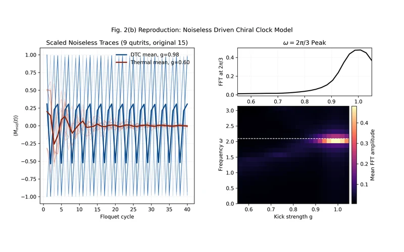

Figure 2(b) · Qutrit time-crystal response
A Qutrit Time Crystal Stabilized with Native Chiral Interactions
A driven chiral clock model of 9 qutrits shows period-doubled magnetization and a sharp subharmonic peak in the Fourier spectrum.
quditfloquet-dynamicsmany-body-physics